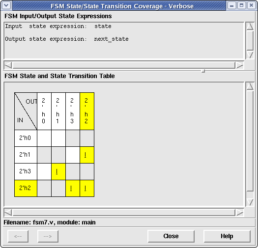

The Verbose FSM State/State Transition Coverage window allows the user to see which states and state transitions of a currently selected FSM have been covered or are uncovered. To view this window, simply select the "FSM" coverage metric mode in the Coverage Metric Bar in the main window and select an underlined FSM state variable in the Coverage File Viewer. This will cause the FSM Coverage window to be displayed with the currently selected FSM information loaded. Figure 1 below shows an example of this window.
Figure 1. Verbose FSM Coverage Window
The Verbose FSM window is split into two main frames. The top frame contains the expressions that make up the input and output states of the selected FSM. The bottom frame contains a two-dimensional table showing the covered and/or uncovered states and state transitions.
The state/state transition table is a two-dimensional table with all possible values of the input states in the left-most column, the output states in the upper-most row, and the state transitions in the rest of the table.
To determine which states have been uncovered in the table, simply find all state values in the input column or output row (both show the same information) which are highlighted with the "Uncovered" color selection specified in the Preferences window. To determine which states have been covered in the table, simply find all state values in the input column or output row which are highlighted with the "Covered" color selection. All other state values which are not highlighted are either impossible values (if all of the state transitions were specified in the Verilog file) or are unknown for coverage (if not all of the state transitions were specified in the Verilog file).
To determine which state transitions have been uncovered in the table, simply find all empty boxes in the table that are highlighted with the "Uncovered" background color. If one of these exist, it specifies that the transition of "input state" (the value specified in the left-most column in the same row) to "output state" (the value specified in the upper-most row in the same column) did not occur. In the example above, we can see that the following state transitions did not occur:
Follow the same procedure for finding all covered state transitions in the table except that these boxes will be highlighted with the "Covered" background color. In the example above, we can see that the following state transitions occurred:
All other state transition boxes that are not highlighted are either impossible state transitions (if all state transitions were specified in the Verilog source code) or are unknown in their coverage (either not hit or impossible transition if all state transitions were not specified in the Verilog source code).
If the Verbose FSM Coverage window is currently displayed, the user may select a new FSM state variable in the Coverage File Viewer of the Main window. When a new FSM is selected, its information immediately replaces the currently selected FSM. This feature allows many different FSMs to be viewed one after the other without having to create/destroy a new window for each.
The user may also see the previous or next uncovered FSM in the main viewer by clicking either the "<--" button (for previous signal viewing) or the "-->" button (for next signal viewing). Note that the "<--" button will be disabled if there is not a signal previous to the current signal in the given module and the "-->" button will be disabled if there is not a signal after the current signal in the given module.
Clicking the Close button will cause the Verbose FSM Coverage window to close and the current selection identifier to be removed from the Coverage Viewer in the main window.
Clicking the Help button will cause this help page to be displayed in a web brower.